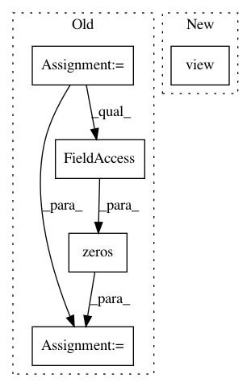

4d6aeeca8a6397fb0c2ce1aa0679155c21c6cbbb,pytorch/pytorchcv/models/isqrtcovresnet.py,Triuvec,backward,#Any#Any#,128
Before Change
@staticmethod
def backward(ctx, grad_output):
input, index = ctx.saved_tensors
x = input
batch_size = x.data.shape[0]
channels = x.data.shape[1]
grad_input = torch.zeros(batch_size, channels * channels, device=x.device, requires_grad=False).type(x.dtype)
grad_input[:, index] = grad_output
grad_input = grad_input.reshape(batch_size, channels, channels)
return grad_input
After Change
def backward(ctx, grad_y):
x, triuvec_inds = ctx.saved_tensors
batch, n, _ = x.size()
grad_x = torch.zeros_like(x).view(batch, -1)
grad_x[:, triuvec_inds] = grad_y
grad_x = grad_x.view(batch, n, n)
return grad_x
In pattern: SUPERPATTERN
Frequency: 3
Non-data size: 5
Instances
Project Name: osmr/imgclsmob
Commit Name: 4d6aeeca8a6397fb0c2ce1aa0679155c21c6cbbb
Time: 2019-03-03
Author: osemery@gmail.com
File Name: pytorch/pytorchcv/models/isqrtcovresnet.py
Class Name: Triuvec
Method Name: backward
Project Name: hunkim/PyTorchZeroToAll
Commit Name: 55b880469ced115de9949d5d25ff835dabbb2caa
Time: 2017-11-08
Author: hunkim@gmail.com
File Name: 13_2_seq2seq_att.py
Class Name:
Method Name: translate
Project Name: osmr/imgclsmob
Commit Name: 4d6aeeca8a6397fb0c2ce1aa0679155c21c6cbbb
Time: 2019-03-03
Author: osemery@gmail.com
File Name: pytorch/pytorchcv/models/isqrtcovresnet.py
Class Name: Triuvec
Method Name: forward